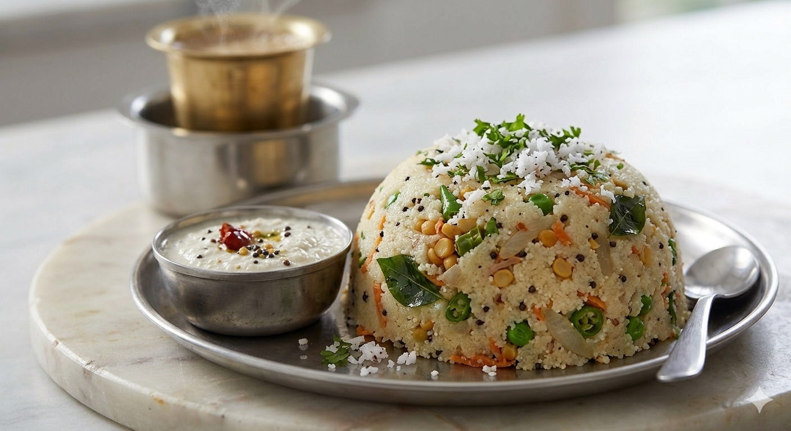

HOME
UPPIT

Uppit (also known as Upma) is a comforting, savory porridge popular across South India as a breakfast staple. It is made by dry-roasting semolina (rava or sooji) and cooking it with tempered mustard seeds, curry leaves, green chilies, lentils, and fresh vegetables, resulting in a fluffy, satisfying dish packed with warm flavors.
Ingredients:
- 1 cup fine semolina (rava / sooji)
- 3 cups water (kept hot)
- 2 tbsp ghee or oil
- 1 tsp mustard seeds
- 1 tsp split black gram (urad dal)
- 1 tsp Bengal gram (chana dal)
- 10–12 cashew nuts (halved)
- 1 medium onion (finely chopped)
- 2 green chilies (slit or chopped)
- 1 inch ginger (finely minced)
- 1 sprig curry leaves
- ½ cup mixed vegetables (finely chopped carrots, beans, and green peas)
- Salt to taste
- 2 tbsp fresh grated coconut & fresh coriander (for garnish)
- 1 tbsp lemon juice
Steps:
- Roast the Rava: Heat a pan on low-medium flame and dry-roast 1 cup of rava for 4 to 5 minutes until it becomes fragrant and slightly grainy. Do not let it change color. Transfer to a plate.
- Tadka / Tempering: In the same pan, heat 2 tbsp of ghee or oil. Add mustard seeds and let them splutter. Add urad dal, chana dal, and cashews. Fry until they turn golden brown
- Sauté Aromatics & Veggies: Add the chopped ginger, green chilies, curry leaves, and onions. Sauté until the onions turn translucent. Stir in the mixed vegetables and cook for 2 minutes
- Simmer: Pour in 3 cups of hot water and add salt. Bring the mixture to a rolling boil, then lower the heat.
- Cook Fluffy: While stirring continuously with one hand to prevent lumps, slowly pour the roasted rava into the water with the other hand. Cover and cook on low heat for 3 to 4 minutes until all the water is absorbed.
- Garnish & Finish: Turn off the heat. Drizzle lemon juice, fresh grated coconut, and coriander leaves over the top. Fluff gently with a fork and serve hot with coconut chutney!